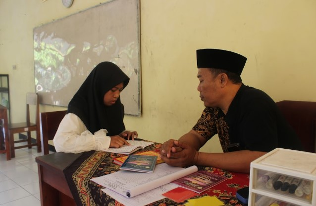

Wadah pengembangan penhafalan dan syiar Islam bagi siswa yang ingin aktif berkontribusi dalam kegiatan keagamaan, kepemimpinan, dan pengabdian di lingkungan sekolah.
GemaJuza merupakan salah satu ekstrakurikuler di bawah naungan REMAJA MASJID SMANSAPA yang berfokus pada penfhafalan Al Quran, serta keterampilan organisasi dalam kegiatan keislaman.
Anggota GemaJuza berperan aktif dalam berbagai program keagamaan, kepanitiaan acara Islam, serta kegiatan yang mendukung pembentukan karakter Islami di lingkungan sekolah.
Melalui kegiatan ini, siswa diharapkan mampu menjadi pribadi yang berakhlak baik, bertanggung jawab, dan siap menjadi teladan bagi lingkungan sekitarnya.
Mengikuti dan menyelenggarakan kajian keislaman bagi siswa.
Berpartisipasi dalam berbagai kegiatan dan peringatan hari besar Islam(PHBI) di sekolah.
Mengembangkan kemampuan penghafalan anggota serta memahami dan mendalami bacaan Al Quran